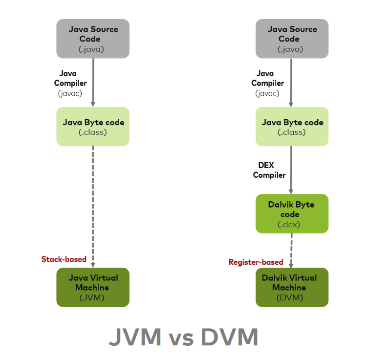
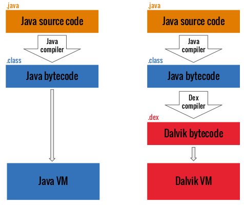

Dalvik
Dalvik=Dalvik VM=DVM- 概述
Dalvik是google专门为Android操作系统设计的一个虚拟机，经过深度的优化。虽然Android上的程序是使用java来开发的，但是Dalvik和标准的java虚拟机JVM还是两回事
JVMvsDVM- 对比： JVM vs DVM
- 执行的字节码文件不一样
JVM执行的是.class文件=Java BytecodeDVM执行的是.dex文件=Dalvik Bytecode
- 文件类型变化
JVM:.java–>.class–>.jarDVM:.java–>.class–>.dex–>.apk
- 运行环境不同
DVM：允许运行多个虚拟机实例- 每一个应用启动都运行一个单独的虚拟机，并且运行在一个独立的进程中
JVM：只能运行一个实例- 也就是所有应用都运行在同一个
JVM中
- 也就是所有应用都运行在同一个
- 执行的字节码文件不一样
- 编译流程对比
- 
- 
- JVM：
基础：基于栈帧Stack-based- ·文件格式·：
java字节码=java bytecode - 效率：相对低
- DVM：
基础：基于寄存器Register-based文件格式：dex- 效率：
DVM效率比JVM高- 速度更快，占用空间更少
- 对比： JVM vs DVM
- 概述